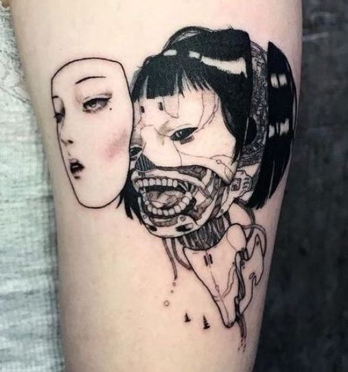
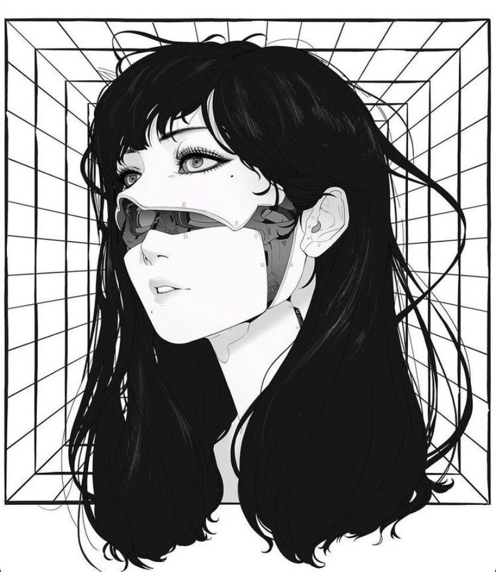
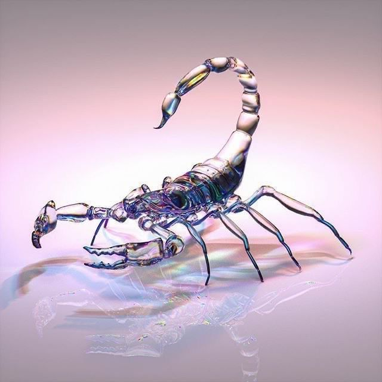
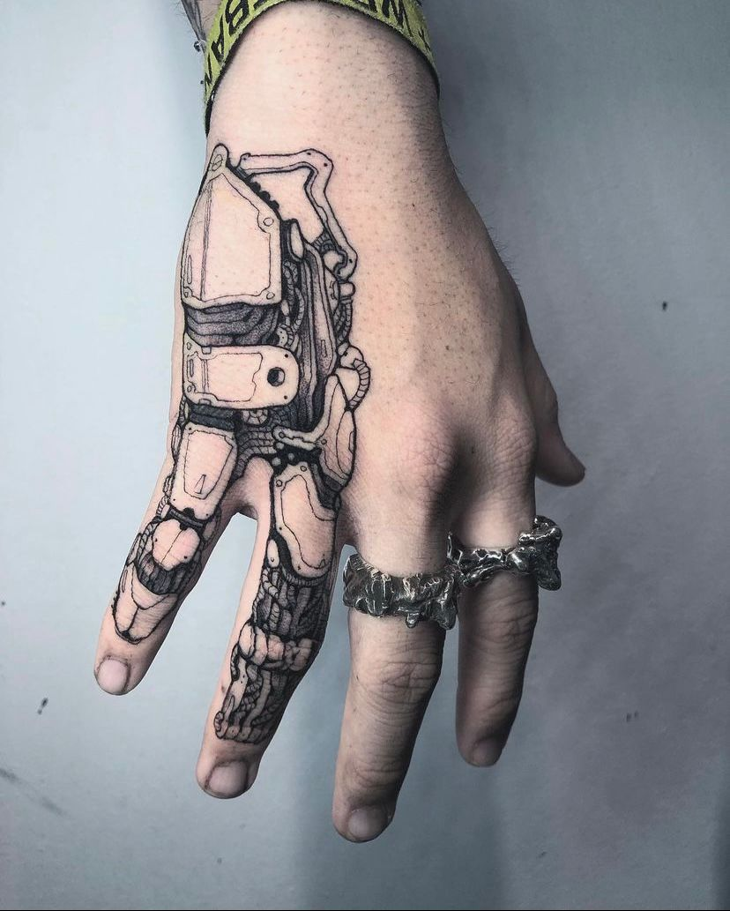
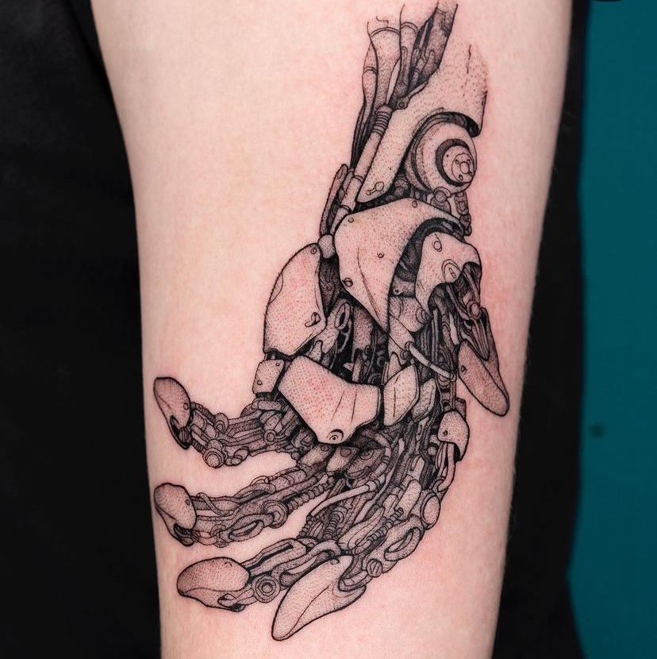
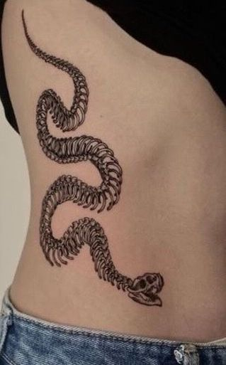
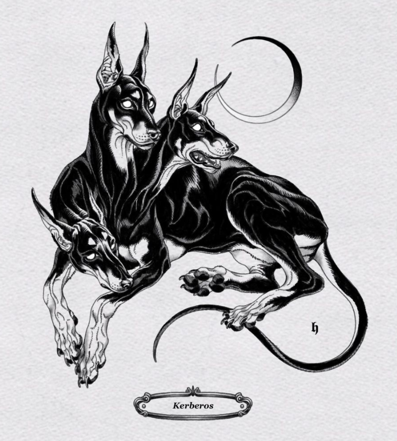
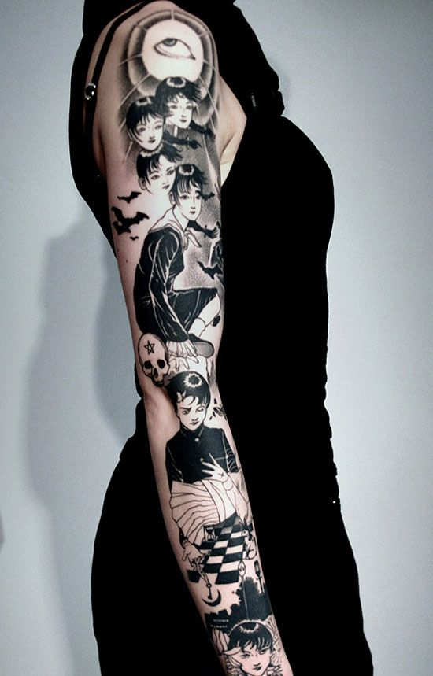
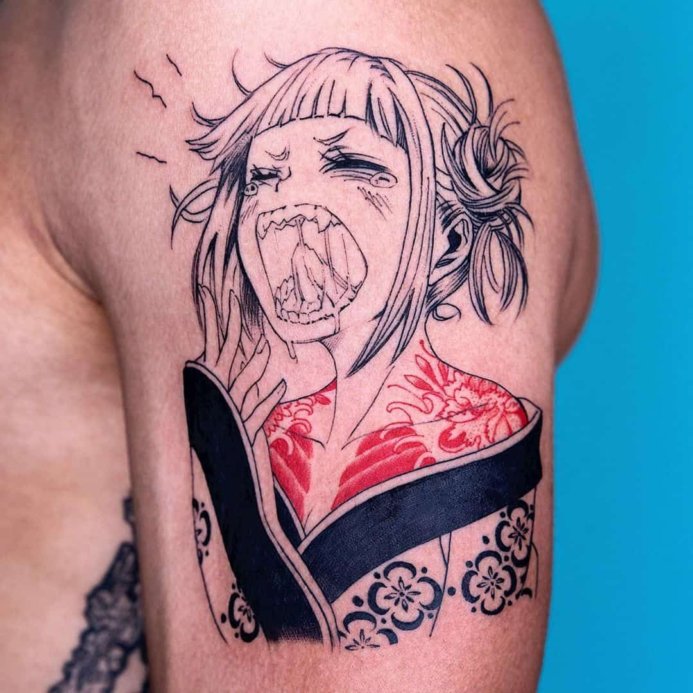

★ Current tattoos
#1. Cyborg Girl – Hong Kong
Nov 2020
Artist: Rika (@rika.loli on Instagram)


- Time taken: 4.5 hours
- Location: Upper right arm
- Size: ~10cm in height
- Pain level: ★ ★ ☆ ☆ ☆
- Price: $2200HKD (~$280USD)
Comments:
Rika is an incredibly talented artist who was an apprentice for a mere 8 months when I had gotten this piece done. I found her account by following #hktattoos on Instagram and coming across her anime tattoos. While I am an avid watcher of anime, that wasn’t what caught my eye. Instead, it was her original works that were comparable to that of Junji Ito’s – horror themed, bold line work. I hadn’t expected her to be too busy as an apprentice, but I was mistaken as my tattoo appointment was over two months away from the booking date.
The tattoo session lasted around 5-6 hours despite only 4.5 hours of active tattooing. Rika was fully booked every day leading up to our appointment, so I did not see the design until the day of – a rather big risk to take, I must say. The first half-hour to an hour was minor tweaking to the design, and printing out multiple sizes of it to figure out placement. And the beginning of the tattoo session went fairly slowly, because she knew it was my first one and wanted to ease me into it, which I found very considerate of her. Overall, the tattooing was not painful at all. In fact, I was able to do my college readings on my phone while she was going at it on my right arm. I am absolutely in love with this piece, it holds a very special place in my heart as my first tattoo.
#2. Mechanical Scorpion – Hong Kong
Aug 2021
Artist: Vinzan (@vinztat on Instagram)

- Time taken: 5 hours
- Location: Upper left thigh
- Size: ~15cm in height
- Pain level: ★ ★ ★ ★ ☆
- Price: $1000HKD (~$130USD)
Comments:
Vinzan is an artist that specializes in an anatomical and mechanical style, who had only been tattooing for around 2 months when I got my piece. Two of my friends had seen her sponsored post on Instagram and sent it my way, thinking it aligned with the style of my first tattoo. Since she’s trying to build up her portfolio, she was offering model pricing to the first few clients who booked her – me being one of them. I had wanted to get a tattoo before leaving Hong Kong to university, and it felt like the conditions were too coincidental to say no to.
This tattoo hurt a lot more than my first one. I had gone into the session thinking my thigh wouldn’t be too bad since it’s a lot meatier than the arm, but turns out there’s a large nerve that runs down that area that was extremely sensitive. Vinzan is very light-handed, so it probably didn’t hurt as much as it could’ve, but that doesn’t mean that I didn’t flinch at every stroke of the tattoo gun. She is a bit of a perfectionist – which is definitely a good thing when it comes to lifetime commitments, like tattoos – and made sure that every detail of the piece was to her utmost satisfaction before letting me leave the studio.
★ Tattoo Artists I Follow


#1. Oozy – Seoul, South Korea
@oozy_tattoo on Instagram
- Style: Hyper-realism, traditional Japanese, anime-style, and more
- Specializes in: Everything
Oozy is the jack of all trades, not having a specialization but rather dabbling in virtually every art style imaginable and excelling in it. He does tattoos similar to Rika’s and Vinzan’s, more mechanical and intricate designs, but also pieces ranging from full traditional Japanese style back pieces to dainty Chinese watercolour-esque works. I stumbled upon his works on Pinterest, namely his mechanical style ones on the right.
I think about the hand tattoo a lot because it pays homage to the traditional steampunk style, but puts a futuristic spin on it. I had asked Rika if a piece like that was doable on the thigh because I cannot commit to such a highly visible piece like that at the moment, but I was told that it would only work well on bonier areas (understandably so). Hopefully, I can get a piece like this from Oozy in the future.
#2. H – Seoul, South Korea
@h_tattooer on Instagram


- Style: Traditional black and grey
- Specializes in: Anatomical animal designs
H is a tattoo artist that I’ve been following for years. I don’t think it’s an exaggeration to say that I was counting down the days til I turned 18 to get tattooed by them. I had even planned a graduation trip to Seoul before COVID hit, but those plans are now a mere pipe dream.
H specializes in anatomical animal designs, using feathery strokes to create flow. What I especially admire is their deep understanding of curves and shapes, as their pieces always flatter the body part it’s located on, making them dynamic pieces, rather than flat and stale images. They also take interest in Greek mythology, having multiple flash designs based off of tales, like that of Cerberus, the guard dog of Underworld. I really wanted the design on the right, but unfortunately since I'm not based in Seoul, I couldn't claim it. I hope to get something done by H in the near future, possibly a snake wrapped around my upper arm, to symbolize my dad and brother, who were both born in the Year of the Snake.
★ Inspiration


My biggest goal related to tattoos is to build up a cohesive sleeve. It will take years of researching and saving up, but I’m in no rush. I have Pinterest boards and Instagram bookmark folders filled to the brim with talented tattoo artists that I would love to get work from. Hopefully once COVID dies down, I can travel once more to book appointments with the artists above. Until then, I have plenty of time to further refine my ideas and themes, making sure I’m truly in love with them before I have them on me for life.
As for a shorter term goal, I want to get a piece that incorporates a color other than black. I favour black and grey tattoos, but I enjoy the pop of color here and there for accent details, much like the design on the left. I believe the reference image on the left is that of Himiko Toga from My Hero Academia, and I like the idea of putting a twist on an anime character to make it unique to you. I'm not sure which character I'd get, I don't have one that I heavily resonate with just yet, but I'm sure I'll find one soon enough.